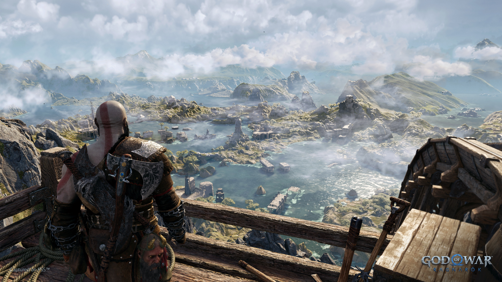
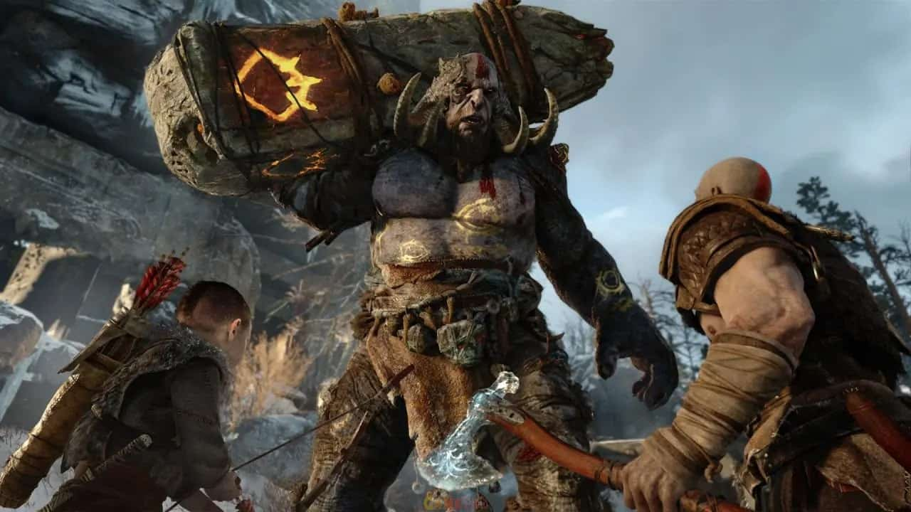
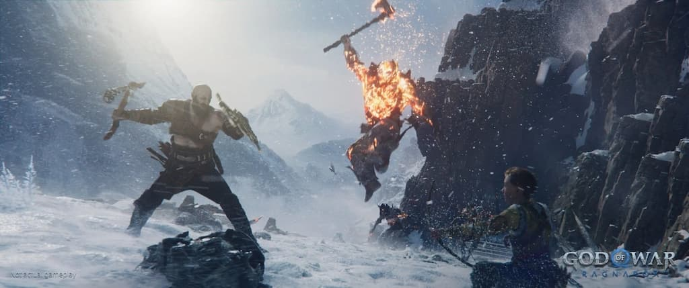
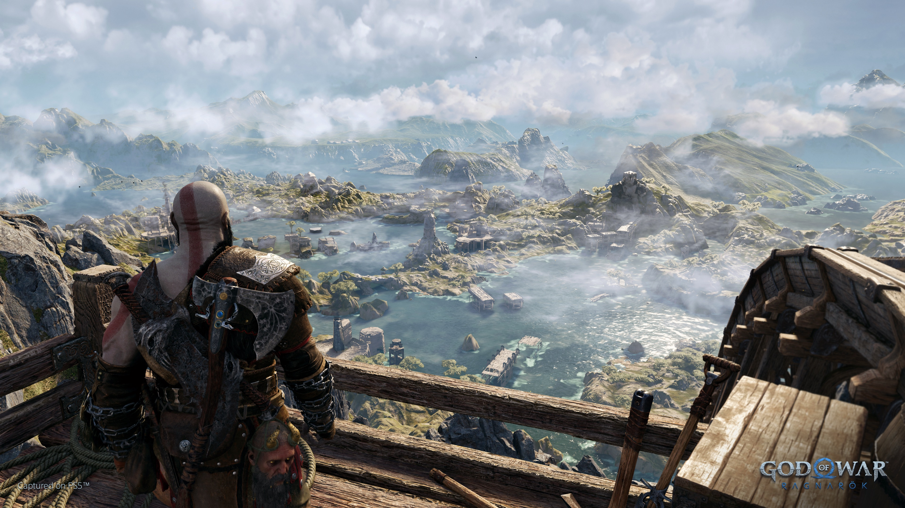
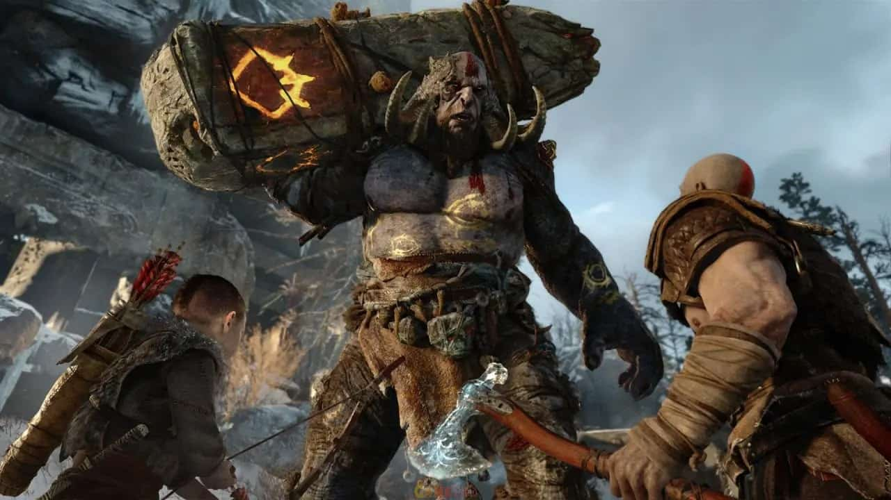
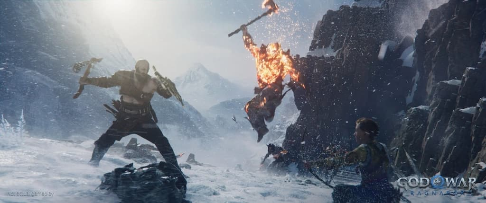
 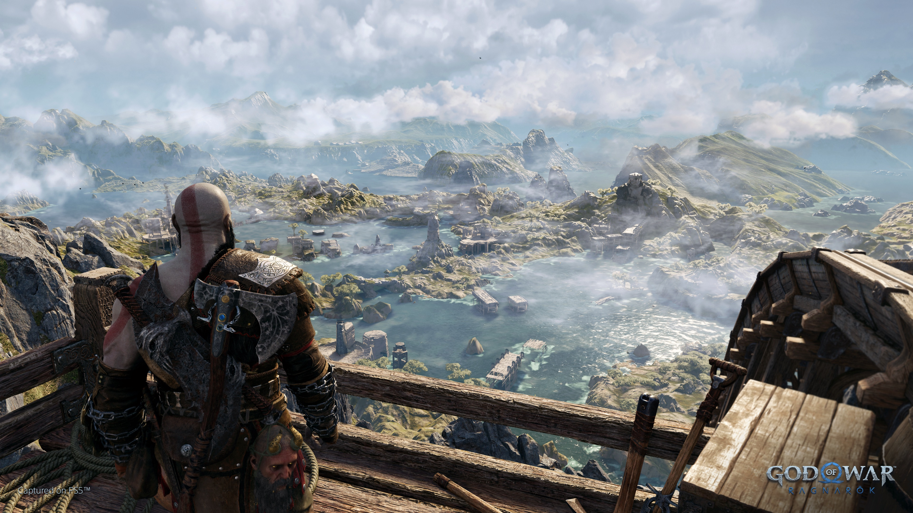
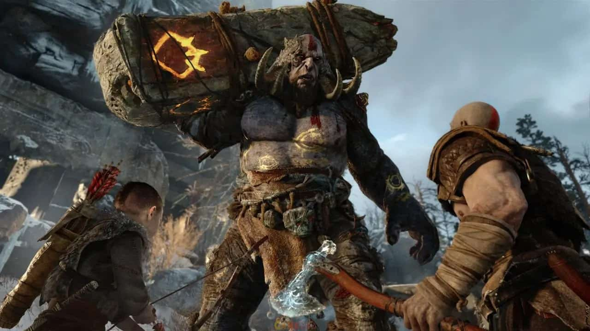
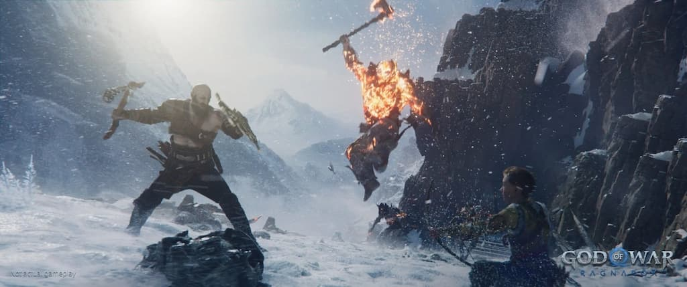
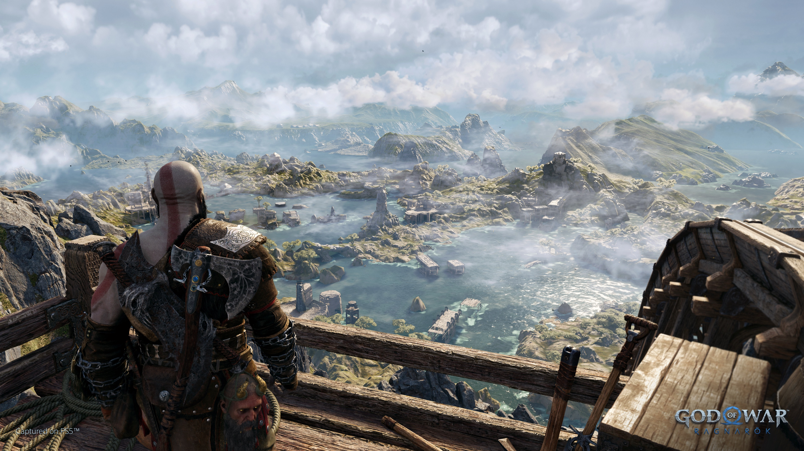
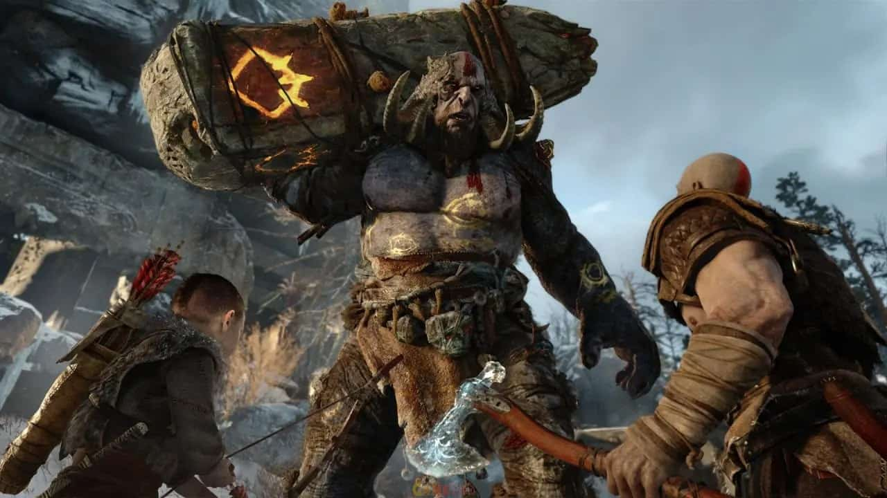
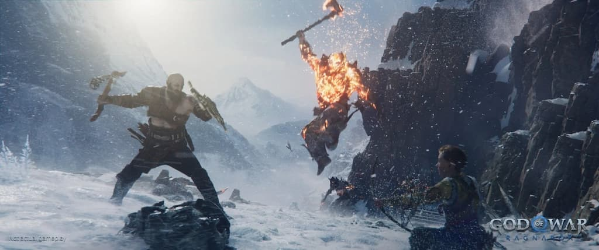
Contenido: Desde Santa Monica Studio llega la secuela del aclamado por la crítica God of War (2018).
Kratos y Atreus deberán viajar a cada uno de los nueve reinos en busca de respuestas.
Explorarán asombrosos paisajes mitológicos, reunirán aliados de los reinos y se enfrentarán a temibles enemigos
A medida que se acerca la amenaza del Ragnarök, Kratos y Atreus tendrán que elegir entre la seguridad de su familia y la de los reinos.